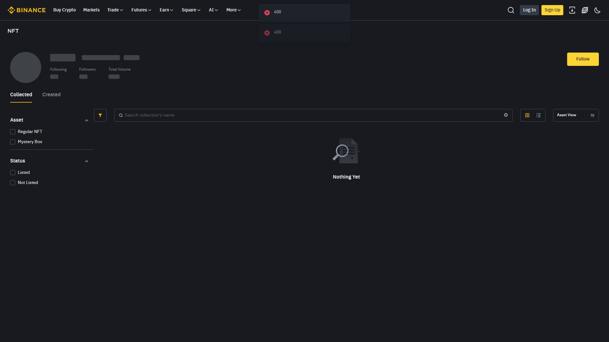

NFT (Non-Fungible Token) ایک منفرد ڈیجیٹل اثاثہ ہے — ہر NFT دوسرے سے مختلف ہوتا ہے (جیسے کسی آرٹ پیس کی اصل کاپی)۔ Binance NFT Marketplace آپ کو NFT خریدنے، بیچنے، Mint کرنے اور کبھی کبھی Auction میں حصہ لینے دیتا ہے۔ یہ ایک نیا اثاثہ کلاس ہے جس میں موقع کے ساتھ بڑا رسک بھی ہے۔

| خصوصیت | کرپٹو (مثلاً BTC) | NFT |
|---|---|---|
| یکساں؟ | ہر BTC = دوسرا BTC | ہر NFT منفرد |
| تقسیم | 0.001 BTC ممکن | عموماً تقسیم نہیں |
| معیار | Fungible Token | ERC-721/1155/BEP-721 |
| لیکویڈیٹی | بہت زیادہ | اکثر کم |
Mint: اپنی فن/کلیکشن کو بلاک چین پر جاری کرنا (Gas Fee لگتی ہے)
Buy: دوسرے کا NFT خریدنا (Listed/Bid)
Sell: اپنا NFT پیش کرنا — Fixed یا Auction
Auction: بولی (Bid) کا مقابلہ — Bid قبول/رد ہوتا ہےFloor Price = کسی کلیکشن کا سب سے سستا Listed Price
Volume = کل تجارت — مانگ کا اشارہ
Rarity = خصوصیات کے لحاظ سے نایاب درجہ
Holders = کتنے مختلف پتے مالک — پھیلاؤہوشیاری: صرف Rare لفظ یا تصویر کے جمال پر نہ جانے؛ Ground پر مبنی تجزیہ کریں۔
| رسک | وضاحت |
|---|---|
| بے لیکویڈیٹی | قیمت کا باوجود، خریدار نہ ملے تو پھنسا ہوا |
| Wash Trading | مصنوعی والیوم سے قیمت بڑھائی جاتی ہے |
| Rug Pull | منصوبہ کار فوراً غائب ہو کر قدم اٹھاتا ہے |
| Phishing | جعلی Mint/Free Claim لنک والیٹ سے چیزیں چوراتا ہے |
| Royalties کی تبدیلی | مارکیٹ پالیسی/رسد پر منحصر |
| گمشدہ کلید | Seed گم = NFT ہمیشہ کے لیے قید |
✅ صرف وہ رقم جسے ضائع ہونے کی برداشت ہو
✅ پہلے چھوٹی رقم، ایک NFT، پورا فلو سیکھیں
✅ Official Verified Collection دیکھیں
✅ Contract Address تصدیق کریں (فشنگ سے بچاؤ)
✅ پرانی زنجیر/سست NFTs سے دور رہیں
❌ NFT کو "جلدی امیر" کا ذریعہ نہ سمجھیں"NFT میں جمال سے زیادہ لیکویڈیٹی اہم ہے — سندی قیمت کاغذی ہوتی ہے۔" اصول: (1) صرف extras رقم، (2) Verified Collection/Contract تصدیق، (3) Seed/Connect کسی کو نہیں۔